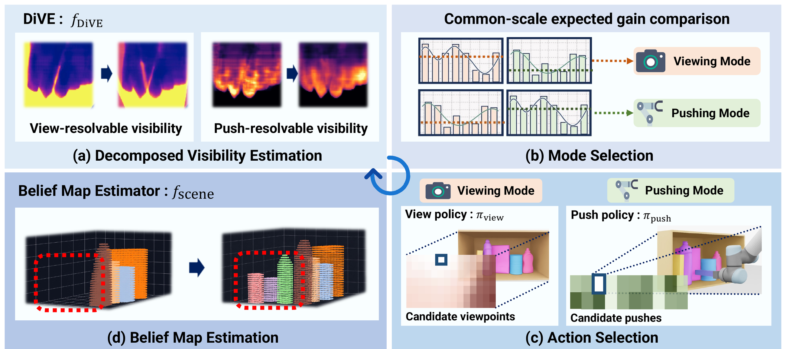

A unified belief or uncertainty map says only that a region is unresolved. It does not
say whether the robot should move the camera or change the scene. We
therefore center the representation on visibility—the quantity that actions
directly change—and decompose it by action modality.

Overview of the proposed framework. (a) DiVE
($f_{\text{DiVE}}$) predicts view-resolvable ($\phi_{\text{view}}$) and push-resolvable
($\phi_{\text{push}}$) visibility maps from the current partial observation. (b) The maps
are converted to a common scale of expected visibility change to select the action mode.
(c) The corresponding policy ($\pi_{\text{view}}$ or $\pi_{\text{push}}$) selects the
best viewpoint or push. (d) The belief map estimator ($f_{\text{scene}}$) fuses the new
observation and, after a push, the swept region to update the global scene belief
$\phi_{\text{scene}}$.
DiVE is a recursive estimator with a shared backbone and two
heads, updating both maps from the current observation and the previous maps:
$(\phi_{\text{view},t},\, \phi_{\text{push},t}) = f_{\text{DiVE}}(\phi_{\text{view},t-1},\,
\phi_{\text{push},t-1},\, o_t)$
The two heads share an architecture but are supervised with different targets, reflecting
the different mechanisms by which viewpoint motion and pushing change visibility.
-
View-resolvable visibility $\phi_{\text{view}}$ is a visibility
state: the empirical frequency with which each voxel is visible across the
viewpoints visited since the most recent push.
-
Push-resolvable visibility $\phi_{\text{push}}$ is a visibility
change: the expected absolute change in marginal visibility (over the candidate
viewpoint set) induced by a randomly sampled candidate push.
The two maps carry different units, so they cannot be compared directly. Using
$\phi_{\text{view},t}(v)$ as a plug-in Bernoulli mean for the visibility of voxel $v$
from one additional viewpoint, the expected absolute update of the running average has a
closed form, which puts both modes on the same
expected per-voxel visibility change scale:
$\mathcal{G}_{\text{view}} = \sum_{v \in \mathcal{V}}
\dfrac{2\,\phi_{\text{view},t}(v)\,(1 - \phi_{\text{view},t}(v))}{|\mathcal{K}_t| + 1}
\qquad
\mathcal{G}_{\text{push}} = \sum_{v \in \mathcal{V}} \phi_{\text{push},t}(v)$
The planner picks the mode with the larger expected gain, then ranks candidates
within that mode with a lightweight policy ($\pi_{\text{view}}$ or
$\pi_{\text{push}}$) in a single forward pass—no candidate-wise post-action belief
prediction, and no hand-tuned cross-mode threshold.